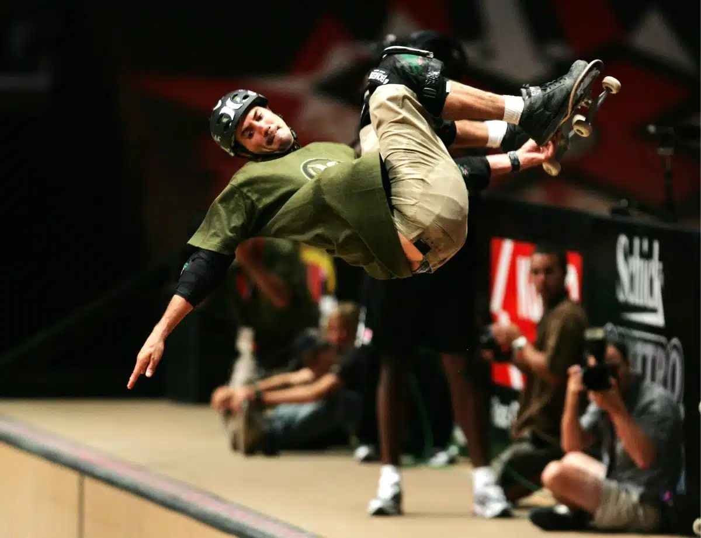

Sobre o Skate

Firmando-se como uma das modalidades olímpicas que mais crescem no país, o skate segue conquistando a população
brasileira.
Desde sua inclusão nos Jogos Olímpicos, o skate tem atraído a atenção de um público cada vez mais amplo,
abrangendo diferentes gerações.
Essa popularidade se reflete na construção de novas pistas de skate em várias regiões, no aumento do número de
competições e no surgimento de novos talentos que levam o nome do país ao cenário internacional.
Como surgiu o skate
Desenvolvido por surfistas durante momentos de maré baixa, o skate surgiu na década de 1950, na Califórnia,
Estados Unidos.
Os criadores do esporte começaram fixando rodinhas de patins em pranchas de madeira, originando o “surfe no
asfalto” ou “sidewalk surf.”
A partir de 1960, o skate passou a ganhar popularidade, os equipamentos foram aperfeiçoados, e a comercialização
em grande escala começou.
As pranchas, inicialmente, tinham formato retangular. Larry Stevenson, fundador da Makaha, foi o primeiro a
produzir skates com pranchas em um design semelhante ao das pranchas de surfe.

Com mais skates sendo fabricados e desenvolvidos, na década de 1960, também foram disputados os primeiros
campeonatos na Califórnia.
Na década seguinte, os skatistas californianos passaram a utilizar piscinas vazias, com o fundo arredondado, como
pistas de skate.
Naquele período, as rodinhas de ferro passaram a ser substituídas por poliuterano, o que ajudou a difundir ainda
mais a prática.
Nos anos 80, a modalidade de street foi desenvolvida com o uso de rampas de madeira em locais onde até então não
era comum que o skate fosse praticado.
Com a popularização do esporte, o skate se tornou um estilo de vida. Afinal, os skatistas têm uma cultura própria,
gírias e roupas características.
História do skate no Brasil
No Brasil, o skate passou a ser praticado na década de 1960, sob influência de surfistas norte-americanos. Porém,
foi a partir dos anos 1970 que o esporte ganhou mais projeção.
Em 1974, foi inaugurada em Nova Iguaçu, no Rio de Janeiro, a primeira pista da América Latina.
Nos anos seguintes, foram disputadas as primeiras competições, principalmente no Rio de Janeiro e em São Paulo.
A Confederação Brasileira de Skate foi fundada somente em 2000 (CBSk), mas, naquela época, alguns skatistas
brasileiros já haviam conquistado projeção mundial.
Um dos principais atletas brasileiros de todos os tempos, Bob Burnquist foi eleito o melhor skatistas do mundo em
1997.
O bom desempenho de Burnquist, maior medalhista da história do X Games com um total de 30 medalhas, e outros
atletas brasileiros ajudou a atrair mais praticantes para o esporte.
